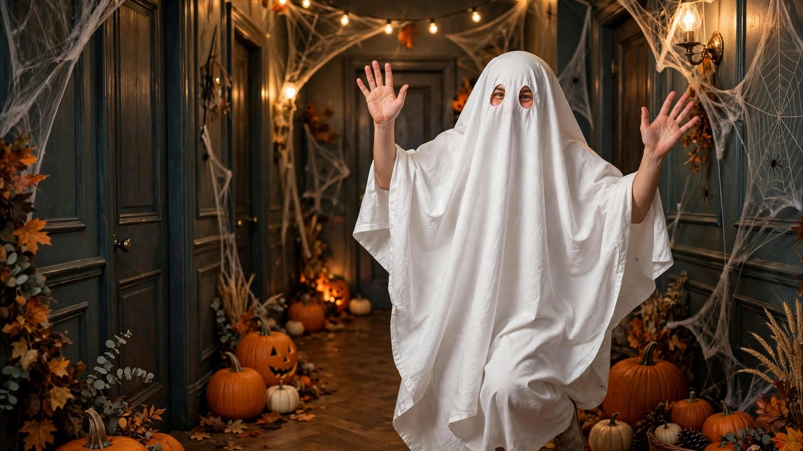

Ghost Halloween Costume Ideas 2026: Beyond the Bed Sheet
Published October 17, 2026 · Updated October 17, 2026 · By EventBuzz Team · 4 min read

The bed-sheet ghost is a classic — but 2026’s ghosts have range. From Victorian spirits to adorable sheet-ghosts with sunglasses, the humble ghost costume has evolved into one of Halloween’s most creative categories.
Here are ghost Halloween costume ideas for every vibe: cute, scary, stylish, and genuinely clever.
Upgraded Classic Ghosts
- The tailored sheet ghost: a white sheet cut and hemmed to fit, with neat eye holes and a smile. The classic, done properly.
- Ghost with sunglasses: sheet + cool shades = instant personality. The internet’s favourite ghost.
- Flower-crown ghost: sheet ghost meets cottagecore. Unexpectedly beautiful in photos.
- Ghost with a beanie: cosy, funny, and very 2026.
Scary Ghost Looks
- Victorian ghost: tattered grey gown, pale face, dark hollow eyes. The Haunting, wearable.
- Drowned ghost: seaweed tones, wet-look hair, dark lips. Beautifully chilling.
- Plague-doctor ghost: beaked mask, dark cloak — historical horror.
- Shadow person: all black with white eye holes. Simple, deeply creepy in the dark.
- Weeping ghost: black tear streaks down a white face. Elegant dread.
Cute & Funny Ghost Ideas
- Pac-Man ghost: coloured sheet (pink, blue, orange) cut in the ghost shape. Gamer nostalgia.
- Ghostbusters ghost: white sheet with the no-ghost logo. Meta and clever.
- “Ghosted”: sheet ghost holding a phone showing “seen.” Modern dating humour.
- Casper: friendly face, blue accents. The nice ghost.
- Ghost bride/groom: veil or bow tie over the sheet. Wedding-party gold.
Ghost Makeup & Styling Tips
Sheet selection: white cotton breathes; avoid polyester (sweaty) and thin fabrics (see-through).
Eye holes: mark while wearing, cut small, reinforce with fabric glue. Mesh over the holes improves vision.
Ghost makeup (no sheet): pale base, grey contour, dark hollow eyes, white lips. Add “cracks” with thin black lines for a porcelain-ghost effect.
Movement: glide, don’t walk. Slow arm movements sell the haunting.
Frequently Asked Questions
How do I make a sheet ghost costume that looks good?
Use a real white cotton sheet, hem it to fit, cut neat reinforced eye holes, and add one personality accessory — sunglasses, flowers, or a hat.
Is the sheet ghost too basic for 2026?
Not with a twist — the sunglasses ghost, flower-crown ghost, and themed ghosts (Pac-Man, ghosted) are all fresh takes on the classic.
How can I see in a sheet ghost costume?
Cut eye holes while wearing the sheet, keep them modest, and add black mesh fabric behind the holes — it hides your face while letting you see out.
What is a scary ghost costume for adults?
Victorian ghost, drowned ghost, or shadow person — pale makeup, tattered fabrics, and slow movement create genuine unease.
Conclusion
From bedsheet basics to haunting couture, the ghost proves Halloween’s oldest costume still has new tricks. Pick your spirit and haunt accordingly.
More spirit-raising ideas in our costume and makeup guides.
Share this guide with friends and family — and have a fantastic Halloween 2026.
Ghost Costume Picks
Sheets, veils and haunting accessories.


Links take you to Temu, where shipping and delivery details are shown. Prices can change.